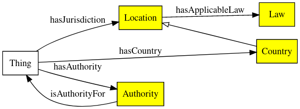

The Data Privacy Vocabulary [[DPV]] enables expressing machine-readable metadata about the use and processing of personal data based on legislative requirements such as the General Data Protection Regulation [[GDPR]]. This document acts as a ‘Primer’ for the DPV by introducing its fundamental concepts and providing examples of use-cases and applications. It is intended to be a starting point for those wishing to use the DPV and an orientation for people from all disciplines. The canonical URL for DPV is https://www.w3.org/ns/dpv which contains its specification.
This primer document aims to ease adoption of DPV by providing:
A high-level conceptual explanation of the DPV and its modelling of concepts;
Self-contained examples that illustrate how the concepts and data models provided by DPV can represent information associated with personal data handling; and
Guidance towards application of DPV in use-cases and technologies.
DPV Family of Documents
[[DPV-Primer]]: (This document) serves as the primer and introduction to DPV and its concepts.
[[DPV]]: The DPV Specification is the formal and normative description of DPV and its concepts. It provides a serialisation of the concepts as a taxonomy using SKOS.
[[DPV-SKOS]]: A serialisation of the DPV using [[RDFS]] and [[SKOS]] to enable its use as a schema or ontology.
[[DPV-OWL]]: is a serialisation of the DPV using [[OWL]] to enable its use as an ontology.
[[DPV-GDPR]]: Extension to the DPV providing concepts relevant to [[GDPR]].
[[DPV-PD]]: Extension to the DPV providing a taxonomy of personal data categories.
[[DPV-NACE]]: [[NACE]] taxonomy serialised in RDFS
Related Links
For a general overview of the Data Protection Vocabularies and Controls Community Group [[DPVCG]], its history, deliverables, and activities - refer to DPVCG Website.
The peer-reviewed article “Creating A Vocabulary for Data Privacy” presents a historical overview of the DPVCG, and describes the methodology and structure of the DPV along with describing its creation. An open-access version can be accessed here, here, and here.
Format for examples
Contributing to DPV The DPVCG welcomes participation regarding the DPV, including suggestions for primer, expansion or refinement of DPV terms, addressing open issues, and other relevant matters.
While we welcome participation via any and all mediums - e.g., via GitHub pull requests or issues, emails, papers, or reports - the formal resolution of contributions takes place only through the DPVCG meeting calls and mailing lists. We therefore suggest joining the group to participate in these discussions for formal approval.
This document is a 'draft version' and is intended for feedback and comments.
Introduction
The [[[DPVCG]]] was formed in 2018 through the [[[SPECIAL]]] with the ambition of providing a machine-readable and interoperable vocabulary for representing information about the use and processing of personal data, whilst inviting perspectives and contributions from a diverse set of stakeholders across computer science, IT, law, soiology, philosophy – representing academia, industry, policy-makers, and activists. It identified the following issues through the W3C Workshop on Privacy and Linked Data:
lack of standardised vocabularies to represent information about use and processing of personal data;
lack of descriptive taxonomies that describe purposes of processing personal data which are not restricted to a particular domain or use-case; and
lack of machine-readable representations of concepts that can be used for technical interoperability of information.
The outcome of addressing these resulted in the creation of the [[[DPV]]], which provides a vocabulary and ontology for expressing information related to processing of personal data, entities involved and their roles, details of technologies utilised, relation to laws and legal justifications permitting its use, and other relevant concepts based on privacy and data protection. While it uses the EU’s [[[GDPR]]] as a guiding source for the creation and interpretation of concepts, the ambition and scope of DPV is to provide a broad globally useful vocabulary that can be extended to jurisdiction or domain specific applications.
People, organisations, laws, and use-cases have different perspectives and interpretations of concepts and requirements which cannot be modelled into a single coherent universal vocabulary. The aim of DPV is to act as a core framework of ‘common concepts’ that can be extended to represent specific laws, domains, or applications. This lets any two entities agree that a term, for example, PersonalData, refers to the same semantic concept, even though they might interpret or model it differently within their own use-cases.
Using DPV
The motivation of DPV is to provide a 'data model' or a 'taxonomy' of concepts that act as a vocabulary for the interoperable representation and exchange of information about personal data and its processing. For this, the DPV specification represents an abstract model of concepts and relationships that can be implemented and applied using technologies appropriate to the use-case's requirements. This specification is serialised using [[SKOS]] to produce a formal documentation of its contents.
DPV Serialisations
Serialisations of DPV specification
The DPV is serialised using [[RDF]] to provide a formal interoperable and machine-readable representation of information. While this enables its use as a semantic web vocabulary, the DPV can also be used without (or alongside) semantic web by either utilising a format such as [[JSON-LD]] that retains the semantics and provides convenience of using JSON, or through other formats such as a CSV or a flat-list of concepts. This section provides an overview of such approaches where DPV can be used both with and without semantic web.
DPV can be used in any of the four ways based on the needs of an use-case:
As a taxonomy or collection of concepts: The [[DPV]] specification provides a vocabulary of concepts (e.g. Purpose) and relationships (e.g. hasPurpose) without providing any restrictions on their usage (e.g. property range assertions). This specification can be used in cases where only the concepts within DPV are needed (e.g. as a list or hierarchy of purposes), either in RDF or as 'flast lists' or CSV files. Guidance for this is provided in the GUIDE-DPV document.
As a 'schema' or 'lightweight-ontology': The [[DPV-SKOS]] is a serialisation of the [[DPV]] specification that provides a lightweight ontology for modelling or annotating information. For this, it uses [[SKOS]] to represent the concepts and [[RDFS]] to model relationships between them. This serialisation can be used in cases where the DPV is to be used as a 'data model' or 'schema'. For reasoners, this is suitable in cases where SKOS and RDFS are sufficient to identify inferences, and where the strict interpretation or restrictions of OWL are not needed. Guidance for this is provided in the GUIDE-DPV-SKOS document.
As an 'OWL2 ontology': The [[DPV-OWL]] is a serialisation of the [[DPV]] specification using [[OWL]] language. It should be used where the additional semantic relationships offered by OWL are needed for modeling knowledge appropriately, that is, in a way that is coherent and produces exactly the desired inferences. Guidance for this is provided in the GUIDE-DPV-OWL document.
Creating your own serialisation: For cases where the above are not suitable or sufficient, an adopter can create their own serialisation of the DPV by implementing the [[DPV]] specification in RDF (or other semantics-aware languages) or for alternate formats and environments such as CSVs, programming APIs, and frameworks. When using DPV in such a manner, it is advised to retain compatibility (and interoperability) by either using the entire IRI (e.g. https://w3.org/ns/dpv#Purpose) or providing documentation for how the custom implementation aligns with the [[DPV]] specification (e.g. stating MyPurposeConcept is the same as dpv:Purpose). Doing this ensures that the data remains compatible and interoperable with the other uses and applications of DPV. Guidance for this is provided in the GUIDE-DPV-CUSTOM document.
Areas of Application
The following is an illustrative, but non-exhaustive list of applications possible with the DPV:
Document annotation - identifying and annotating concepts within documents such as privacy policies, legal compliance documentation, web pages
Representing Policies – expressing policies for how personal data should be ‘handled’, policies for describing an use-cases’ use of personal data
Representing Rules – creating and utilising rules for expressing constraints or obligations regarding the use of personal data, checking conformance with obligations such as for legal compliance
For more concrete uses, see the community maintained [[[DPV-ADOPTION]]] in its wiki.
Collect known applications, use-cases
SPECIAL partners
Signatu
Specify additional ones
Represent privacy policies
Legal compliance evaluations
Provenance of organisation's personal data handling practices
Link to page with testimonials/documented use-case from adopters
Semantics of DPV
DPV defines a broad notion of semantics for providing a conceptual model of concepts and relationships between them. As explained in the [[[#serialisations]]] section earlier, [[DPV]] is the specification which is represented formally using [[SKOS]]. To use it as an 'ontology' or 'schema', it is recommended to serialise it into something that can model and represent the required interpretations or constraints. The following sections provides a brief overview of the modelling used in [[DPV]] specification and how it is converted into the ontologies [[DPV-SKOS]] and [[DPV-OWL]].
Concepts and Relationships
[[DPV]] is a collection of concepts. Here the term 'concept' is a broadly used as consisting of a term non-exhaustively representing any of the following: idea, thought, meaning, object, event, relations, class, or category. Thus, in DPV, 'concepts' consist of terms and relationships between them. These include: Concept, has type, is instance of, and has applicable concept.
Concepts and Relationships
A ‘concept' in DPV thus a 'term' representing information associated with that particular concept. For example, the concept Email refers to information about emails. This information may contain email addresses, aliases, signatures, and so on. While an intuitive use of Email may be taken to only refer to email address, within DPV concepts are defined with a strict scope as being representatives of all concepts that are inherently a part of it. Therefore, for emails, the concept Email is inclusive of email addresses, aliases, and so on from above. To specifically refer to 'email address', the concept Email Address should be used, which is a 'subtype' of Email.
Through this interpretation, the DPV is structured as a hierarchy of concepts where each parent or top or broader concept represents a broad set of information and its children or bottom or narrower concepts represent parts of that set.
In taking this view of concepts and relationships, DPV provides a way to agree upon what a term means and is intended to represent. For example, when two different use-cases use the concept Personal Data using DPV, both refer to the same concept. Similarly, when Email is declared as a subtype of Personal Data, another entity receiving and reading this information must interpret it in the same manner. DPV is thus intended to be a foundational model for terms and relationships when representing and exchanging information.
DPV as an Ontology
Where the [[DPV]] specification defines concepts and relationships between them as 'terms' intended to represent them as 'concepts', the use of such concepts in actual use-cases is often accompanied with additional information and specific 'serialisation' that make it possible to use DPV in a given technological or theoretical framework.
For example, consider the relation has Personal Data, which is used to represent association with a Personal Data concept or its sub-types or its instances. While this information is implicit, it can also be explicitly declared as to: (i) express the inherent logic and interpretation explicitly; (ii) provide information for verification of its expression; and (iii) provide hints for identifying concepts to be associated with this relation. For example, specifying that the relation 'has personal data' must always be associated with 'Personal Data'. When considering such uses, DPV must be specified as an 'ontology' using a serialisation that supports representing this and any other required information.
One option for represent ontologies is RDF ([[[RDF]]]) which provides a formal method for expressing information or facts, with RDFS ([[[RDFS]]]) and OWL ([[[OWL]]]) for representing a more detailed and logic-based assertion of the model in terms of relationships and restrictions. While there are other alternatives available to RDF for representing information, and to OWL for representing ontologies, the DPVCG uses these to serialise the DPV specification as an ontology.
The table provides an overview of the expression of concepts across the three DPV serialisations.
Concept
[[DPV]]
[[DPV-SKOS]]
[[DPV-OWL]]
Concept
dpv:Concept
skos:Concept
owl:Class
is subtype of
dpv:subTypeOf
skos:broaderTransitive
owl:subClassOf
is instance of
dpv:instanceOf
rdf:type
rdf:type
has concept
dpv:hasConcept
rdf:Property
owl:ObjectProperty
relationship domain
dpv:domain
rdfs:domain
rdfs:domain
relationship range
dpv:range
rdfs:range
rdfs:range
Extending Concepts for Use-Cases
Most of the concepts within DPV are provided as hierarchies of classes representing categories of information, which are generic or abstract or broad so as to permit their application across a diverse and varied landscape of real-world use-cases. In order to accurately reflect the particulars of an use-case, concepts within DPV would (most likely) need to be extended. The specifics for how this should be done depend on the manner in which DPV is utilised. For example, in [[DPV]], the relations subTypeOf and instanceOf provide a way to indicate such applications.
If using [[DPV-SKOS]] semantics, extending is done using skos:broaderTransitive, whereas [[DPV-OWL]] semantics uses the rdfs:subClassOf relationship. To create instances, both use rdf:type. Where an exact concept is not present within the DPV and a broad concept exists for representing the same information, one should subtype or extend that broad concept to define the required information.
The mechanism for extending concepts (via both subclasses/subtypes and instances) is useful to align existing concepts or vocabularies with the DPV taxonomies, such as by declaring them as subclasses of a particular concept. This permits the creation of domain or jurisdiction specific extensions, such as [[DPV-GDPR]] for expressing the legal bases provided by GDPR. Extensions also permit more accurate representations of a use-case by extending from multiple concepts to refine and scope the interpretation. This means each concept can have multiple parents representing the intersection of their respective sets.
It is not necessary to extend concepts unless one wishes to depict use-case specific information. For example, if in a use-case it is sufficient to (only) say some information is collected, then dpv:Collect can be directly used. However, where more specific information is needed, such as also specifying a method of collection (e.g. CollectViaWebForm), then it is recommended to extend the concept, for example as <CollectViaWebForm a dpv:Collect>. If there are lots of forms and they need to be 'grouped' together as collection methods, then one would subtype/subclass Collect as CollectViaWebForm and create instances of it for each form to be represented.
Though this example used a web form as a method of collection by directly mentioning it within the concept as CollectViaWebForm, this may not always be desirable. For example, that same web form may also need to be represented separately for logging purposes. DPV is exploring the provision of a Technology concept to assist in representing information regarding how concepts are implemented and the use of specific technological artefacts such as web forms, databases, along with their functions such as data storage and retrieval.
Maintaining Interoperability
DPV intends to provide a base or foundational framework for different entities to exchange information and interpret concepts for interoperability. When an adopter (e.g. an organisation using DPV) extends concepts to refine them for their own use-case, the concept is still (weakly) interoperable by relying on DPV’s broad taxonomies to provide a common point of reference.
Core Concepts
Structure of DPV
DPV as a set of hierarchies
DPV can be viewed as a hierarchical taxonomy of concepts where each core concept represents the top-most abstract concept in a tree and each of its children provide a lesser abstract or more concrete concept. For example, consider the concept of PersonalData which is the abstract representation of personal data. It can be further refined or extended as SensitivePersonalData, and further as SpecialCategoryPersonalData and then as GeneticData and so on.
From this perspective, the top-most abstract concepts are collectively referred to as the core vocabulary within DPV. The goal of the DPV is to provide a rich collection of concepts for each of top concepts so as to enable their application within real-world use-cases. The identification of what constitutes a core concept is based on the need to represent information about it in a modular and independent form, such as that required for legal compliance.
Each core concept is intended to be independent from other core concepts. For example, the Purpose (e.g. Optimisation) refers only to the purpose of why personal data is processed and is independent as a concept from the PersonalData (e.g. Location) or the Processing activities (e.g. collect, store) involved to carry out that purpose. Such separation is necessary in order to represent and answer questions such as:
Q: What data is being processed? Ans:dpv:PersonalData → dpv:Email
Q: Why is the data being processed? Ans:dpv:Purpose → dpv:Marketing
Q: What is being done with the data? Ans:dpv:Processing → dpv:Collect, dpv:Store
The separation of concepts creates a modular structure for concept hierarchies within DPV, which in turn allows an adopter to use one particular concept taxonomy or module (e.g. list of purposes) independently without reusing the others, or to select only those concepts which are needed for their particular use-case. The separation also permits greater flexibility of representation and usage - such as using different combinations of core concepts as needed in use-cases. For example, a use-case can specify a single concept represent both Purpose and Processing by combining their respective concepts from DPV. The modular design of DPV also makes it possible to define domain and jurisdiction specific concepts in a separate namespace - such as the [[[DPV-NACE]]] purpose taxonomy providing a way for Purpose to indicate sectors using NACE taxonomy, and the [[[DPV-GDPR]]] for using LegalBasis to represent the legal bases provided by GDPR.
Overview of Core Concepts
PersonalData
Indicating applicable or relevant PersonalData
‘Personal data’ refers to any data about a natural person that can be used to identify them directly or, in combination with other information, indirectly. ‘Personal data’ is also referred to as ‘personally identifiable information (PII)’, a term that is mainly used in the United States of America. However the terms should not be interchangeably used as ‘personal data’, as it is defined in the GDPR, is a broader term than PII, as PII is usually used to refer only to information that can directly identify a person. DPV’s definition of personal data is therefore based on the GDPR concept as it covers a wider range of information considered ‘personal data’. Personal data can be declared as a category, such as ‘Email’, or an instance, such as ‘x@y.z’. PersonalData is associated to using the relation hasPersonalData.
Purpose
Indicating applicable or relevant Purpose
Representing the purpose for which personal data is processed, for e.g. ‘Personalisation’ as a broad category of purpose
Processing
Indicating applicable or relevant Processing
Representing processing as in the actions or operations over personal data, for e.g. collect, use, share, store.
LegalBasis
Indicating applicable or relevant LegalBasis
A legal basis is a law or a clause in a law that justifies or permits the processing of personal data in the specified manner. It is a jurisdictional concept given the scoping of laws to specified countries or regions, as well as a domain-specific concept given the specific laws enacted scoped to particular domains. A law, such as the GDPR, that regulates the use of personal data requires that every processing of personal data must be justified with some legal basis to ensure it is lawful, and to further assess its correctness, accountability, and impact based on the obligations applicable. However, what is considered a legal basis varies greatly across cultures, domains, use-cases, and laws themselves. The aim of DPV is therefore to provide an upper-level abstract taxonomy of categories of legal bases that can be customised and applied as needed.
Entities
Indicating applicable or relevant Entities
Representing the ‘entities’ or ‘actors’ involved in the processing of personal data. DPV provides a broad categorisation of entities, with the following three representing the most common ones:
DataController
Indicating applicable or relevant DataController
Representing the organisation(s) responsible for processing the personal data
DataSubject
Indicating applicable or relevant DataSubject
Representing the categories or groups (e.g. Users of a Service), or instances (e.g. Jane Doe) of individual(s) whose personal data is being processed
Recipient
Indicating applicable or relevant Recipient
epresents the entities that receive personal data, e.g. when it is shared
TechnicalOrganisationalMeasure
Indicating applicable or relevant TechnicalOrganisationalMeasure
Technical and Organisational measures consist of activities, processes, or procedures used in connection with ensuring data protection, carrying out processing in a secure manner, and complying with legal obligations. Such measures are required by regulations depending on the context of processing involving personal data. For example, GDPR (Article 32) states implementing appropriate measures by taking into account the state of the art, the costs of implementation and the nature, scope, context and purposes of processing, as well as risks, rights and freedoms. Specific examples of measures in the article include:
the pseudo-anonymisation and encryption of personal data
the ability to ensure the ongoing confidentiality, integrity, availability and resilience of processing systems and services
the ability to restore the availability and access to personal data in a timely manner in the event of a physical or technical incident
a process for regularly testing, assessing and evaluating the effectiveness of technical and organisational measures for ensuring the security of the processing
Right
Indicating applicable or relevant Right
Representing the rights available, applicable, or afforded by a law or regulation, either to data subjects or data controllers, or other entities
Risk
Indicating applicable or relevant Risk
epresenting risk(s) associated with a concept, for e.g. risk of unauthorised data disclosure related to processing, technical measure, or vulnerability of data subjects
Technology
Indicating applicable or relevant Technology
Representing the rights available, applicable, or afforded by a law or regulation, either to data subjects or data controllers, or other entities
Temporal and Geo-Spatial Information
Indicating applicable or relevant temporal and geo-spatial information
Representing the rights available, applicable, or afforded by a law or regulation, either to data subjects or data controllers, or other entities
Jurisdiction

Indicating applicable or relevant Jurisdiction
Representing the rights available, applicable, or afforded by a law or regulation, either to data subjects or data controllers, or other entities
Personal Data Handling
In legal terminology, it is common to refer to all information about how personal data is being processed using the colloquial term processing. This results in confusion between the use of processing as a concept referring to all information (i.e. purposes, personal data), and [=processing=] as a concept referring to the specific actions or operations (e.g. collect, use).
To avoid this, DPV defines a new concept called PersonalDataHandling for representing how the core concepts are related or apply to each other for a particular use-case. To connect or relate each core concept with an instance of PersonalDataHandling, relationships or properties are provided. These relationships are expressed using semantic web best practices so as to enable easier comprehension by humans, for e.g. naming the relationship hasPurpose to indicate the applicability of a Purpose. Generally, properties in DPV follow the convention of has<SomeConcept> to indicate applicability of <SomeConcept>. The core concepts and their relations are depicted in the following diagram.
PersonalDataHandling as a central concept
For an example of how PersonalDataHandling brings together the core concepts, consider the example where Acme is a DataController that Collect(s) and Use(s) Email for ServiceProvision.
The use of PersonalDataHandling can be nested, which means one instance can contain other instances, much like a box with several smaller boxes inside. This permits breaking down complex or dense use-cases into more granular ones and representing them in a more precise and granular fashion. In the above example, consider the following situation containing a single PersonalDataHandling instance comprising of two additional instances representing: (i) data is stored using a data processor, (ii) data is used for Marketing. While it is certainly possible to represent all of this information within one single instance of PersonalDataHandling, the adopter may decide to create separate instances of PersonalDataHandling based on requirements such as reflecting similar separations for legal documentation or accountability purposes.
Specifying order between PersonalDataHandling instances
Note that PersonalDataHandling is intended to provide a convenient concept for tying the core concepts together, and DPV does not make its use binding, nor does it constrain the relationships to only be defined between PersonalDataHandling and the other core concepts. This is so as to permit using DPV in alternate or differing models. For example, where a central concept already exists, such as when describing relevant information for a smartphone app, the concept for App can be a replacement for PersonalDataHandling based on statements such as <App> hasPurpose <SomePurpose>. Even in such cases, PersonalDataHandling can provide granular expression thereby enabling description of different contexts within which the app uses personal data, such as for registration or complaint resolution.
Alternate Models of PersonalDataHandling
Another instance where one may not wish to utilise PersonalDataHandling is where the adopter or use-case wants to indicate a different method for relating concepts together. For example, instead of expressing the relationship between personal data and purpose through a PersonalDataHandling instance, an alternate model could be one where the purpose directly specifies what personal data it uses as: <SomePurpose hasPersonalData SomePersonalData>. Similarly, another instance for such alternate use of concepts is to associate a legal basis directly with the purpose by using the hasLegalBasis relationship. To support such uses, DPV does not explicitly declare restrictions on the properties in terms of what concepts they can be used with (e.g it does not provide domain assertions). In case an adopter needs such explicit declarations, they can utilise or import the separate file declaring them. The following figures indicate some commonly encountered alternate models which do not use PersonalDataHandling as a central concept.
Some alternatives, such as using Purpose instead of PersonalDataHandling, or creating ad-hoc concepts such as App or Policy as per use-case.